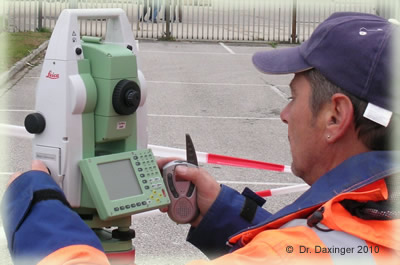

Technische Vermessung
Vermessungstechnische Datenerfassung als Grundlage für Planung, Bau und Überwachung.
Dazu gehören vermessungstechnische Datenerfassung als Planungsgrundlage, wie etwa Lage-/Höhenpläne und Bestandspläne; aber auch die baubegleitende Vermessung samt Kontrollen und Volumen-/Massenermittlungen.
Durch moderne Messmethoden wie Laserscanning und GPS hat sich hier die Zahl der Anwendungen erhöht. Zur technischen Vermessung gehört aber auch die Überwachung bestehender Gebäude und Baustrukturen, um frühzeitig Schädigungen zu erkennen oder diese nachhaltig zu dokumentieren (Beweisaufnahmen).

Teilbereiche
Schwerpunkte der technischen Vermessung
Lage-/Höhenpläne
Vermessungstechnische Datenerfassung als Planungsgrundlage – Lage- und Höhenpläne sowie Bestandspläne.
Bauvermessung
Baubegleitende Vermessung samt Absteckungen, Kontrollen und Volumen-/Massenermittlungen.
3D-Laserscanning
Hochauflösende, berührungslose Erfassung von Objekten und Bauwerken mit moderner Laserscanning-Technologie.
Überwachungsmessung
Überwachung von Gebäuden und Baustrukturen zur frühzeitigen Erkennung und Dokumentation von Schädigungen (Beweisaufnahmen).